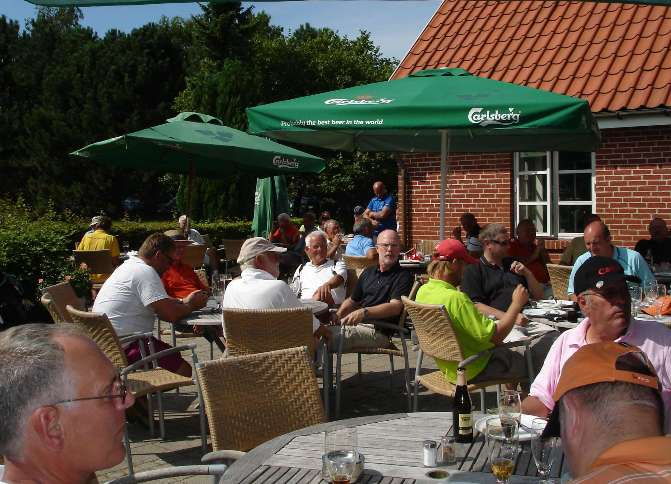

<div class="pages">
  <div data-page="2013-10-25-10-19-50" class="page navbar-fixed toolbar-fixed" >
    <div class="navbar">
      <div class="navbar-inner">
        <div class="left">
          <a href="#" class="link back icon-only"><i class="icon icon-back"></i></a>
          <!-- <a href="#" class="back link icon-only"><i class="icon icon-back"></i></a> -->
        </div>
        <div class="center">Hornbæks herrer</div>
        <!-- <div class="right"></div> -->
        <div class="right">
        </div>
      </div>
    </div>
    <div class="page-content" style="padding-top:45px;">
       <div class="content-block">
          <p>Hornbæks herrer</p>
          
          <p>Herreklubben spiller hver onsdag fra april til september 2016
          De ugentlige matcher indgår i en samlet turnering for hele sæsonen. Desværre har klubben besluttet, at der ikke må være gun-start om eftermiddagen. Så derfor kan vi ikke gennemføre vores præmieoverrækkelse og fælles spisning som de andre år. Vi vil selvfølgelig prøve at finde en løsning; så vi kan få det sociale med og uddele præmier.
          <br /><br /> 
          Andre arrangementer<br />
          Herreklubben har i løbet af sæsonen en række andre aktiviteter. Det kan du se i turneringskalenderen på herreklubbens hjemmeside <a href="http://www.fade.dk/" class="external">www.fade.dk</a>. 
          <br /><br /> 
          Tilmelding og betaling for sæsonen 2016<br />
          Du kan tilmelde dig ved at indbetale 350 kr. på herreklubbens konto i Jyske Bank: Reg. nr. 5064, konto nr. 1292102. (Husk at anføre navn og medlemsnummer i Hornbæk Golfklub). Beløbet dækker match fee for alle Herreklubbens matcher i sæsonen, inklusiv Åben herredag og afslutningsmatchen. Det omfatter dog ikke Pink ball matchen mod Lochers piger og arrangementer på fremmede baner. 
          Eventuel henvendelse om betalingen til Herreklubbens e-maileller mobil 51250744.
          <br /><br /> 
          Tidsbestilling til herreklubbens ugentlige matcher<br />
          Medlemmerne af herreklubben har fortrinsret til start tiderne hver onsdag kl. 15.00-17.00. Tider, som ikke er booket af Herreklubbens medlemmer senest søndag kl. 24.00, frigives i Golfbox, så andre kan benytte dem.
          <br /><br /> 
          Gæster til herreklubbens matcher<br />
          Hvis du ikke ønsker at være medlem i Herreklubben, er du velkommen til at spille med om dagens præmie i herreklubbens matcher. Gæster fra andre klubber er også velkomne i herreklubbens matcher. Matchfee for den ugentlige match er 50 kr.
          <br /><br /> 
          Mail liste<br />
          Hvis du sender din e-mail adresse til <a href="#">herreklubben@fade.dk</a> vil du modtage information om Herreklubben i løbet af sæsonen.</p>
        </div>
    </div>
    </div>
    </div>
  </div>
</div>
